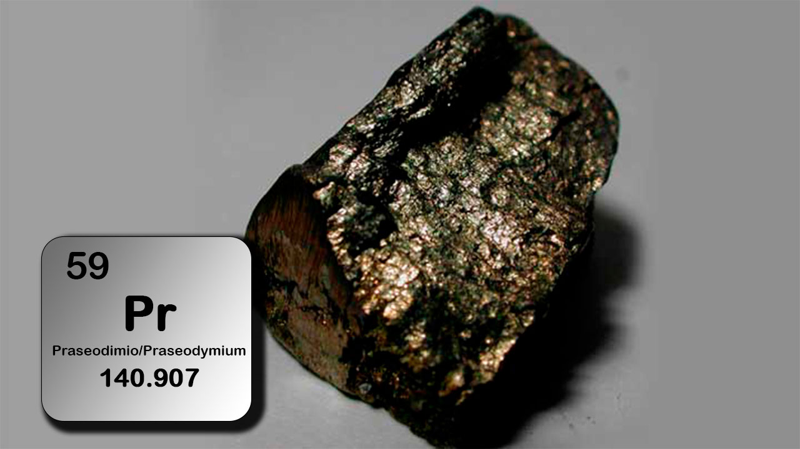

| Property |
Value |
| Element Name |
Praseodymium |
| Atomic Mass |
140.9 u |
| Atomic Number |
59 |
| Number of Isotopes |
121Pr - 159Pr |
| Isotope Mass |
120.9 - 158.9 |
| Melting Temperature |
931 °C |
| Boiling Temperature |
3520 °C |
| Density |
6,640 kg/m³ |
| Electronegativity |
1.13 |
| Year of Discovery |
1885 |
| Abundance |
9.1 ppm |
| Characteristics |
Praseodymium is a silver-colored metal belonging to the lanthanide group. Its oxide has a green color. |
| Applications |
- Used in wind turbines.
- Alloys with magnesium in aircraft engines.
- Lamps for projectors.
- Protective welding glasses.
|
| Major Deposits Location |
Found in minerals like monazite, with deposits mainly in China, USA, and Australia. |
| Health Effects |
Moderately toxic, irritating to eyes and skin. Prolonged inhalation can cause lung damage. |
| Environmental Effects |
Can accumulate in water and soil, increasing its concentration in humans and the environment. |
